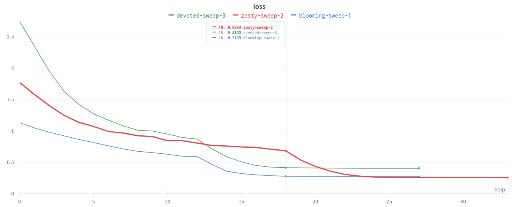
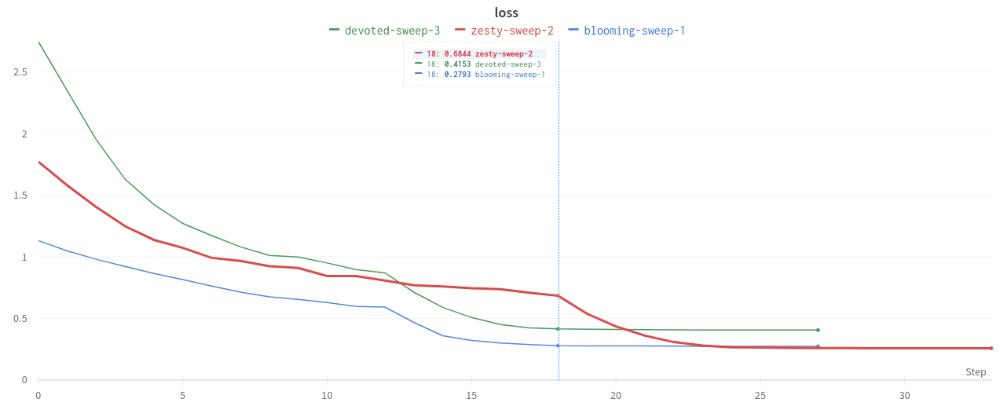
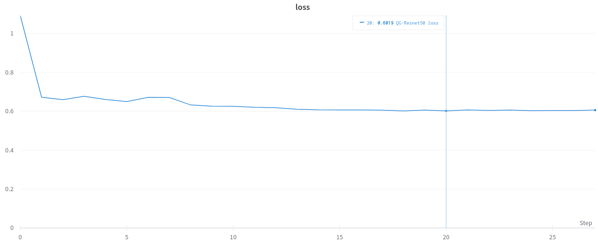
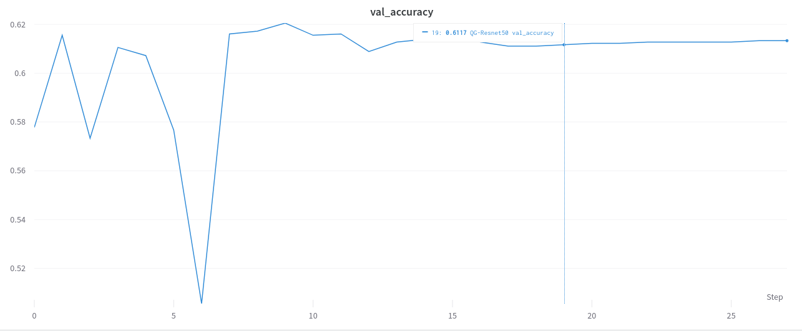
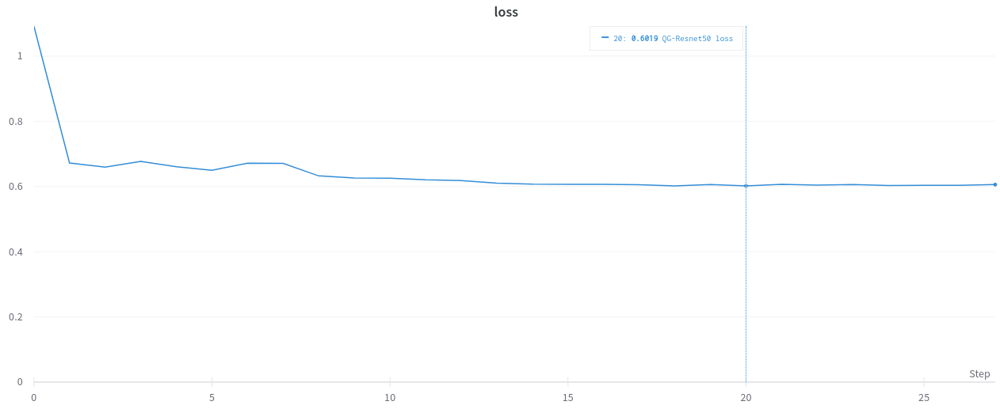
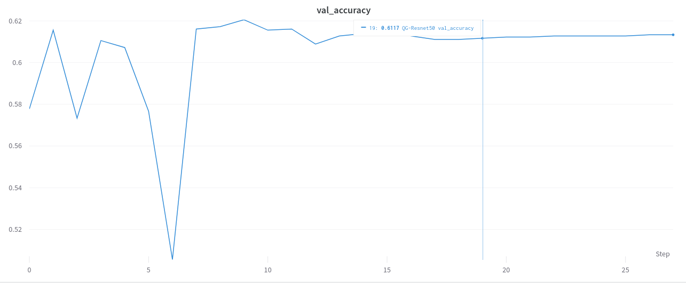
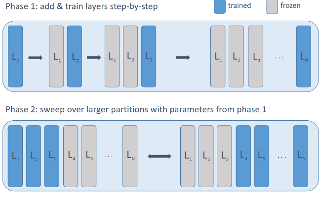

Where the Magic Happens
revealOptions: transition: ‘fade’ transitionSpeed: ‘fast’ width: 1400 —
Quark Gluon ECAL
- Cropped to 40 x 40
- Log Scaled
- Standardize

Classical Models
Quark Gluon ECAL - ResnetV2 - Depths 20, 44 - 100 epochs
| Depth | Acc | Val acc |
|---|---|---|
| 20 | 0.99 | 0 .58 |
| 56 | 0.99 | 0.561 |
| 110 | 0.99 | 0.58 |
 


Results on Pretrained model
- Resnet50 $\rightarrow$ 512 $\rightarrow$ 128 $\rightarrow$ 2
- Using Log scaling with Ranger Optimizer
- Acc: 0.6621, Val Acc: 0.6133
 



Results on Quantum CNN
- Quark Gluon
- 0 1 images
- 360 images per class
- Center cropped $\rightarrow$ (40,40)
- Log Scaling
- Standardize
- DRC Ansatz
- Feature maps: No need
-
20 epochs
QCNN on Quark Gluon
_________________________________________________________________
Layer (type) Output Shape Param #
=================================================================
input_1 (InputLayer) [(None, 40, 40, 1)] 0
qconv2d_1 (QConv2D) (None, 20, 20, 1) 80
qconv2d_2 (QConv2D) (None, 10, 10, 1) 80
flatten (Flatten) (None, 100) 0
NQubitPQC (NQubitPQC) (None, 1) 808
=================================================================
Total params: 968
Trainable params: 968
Non-trainable params: 0
Quantum Circuit
┌──┐
(0, 0): ───H───Y^w0───@───Y^w4─────@────
│ │
(0, 1): ───H───Y^w1───@───Y^w5────@┼────
││
(0, 2): ───H───Y^w2───@───Y^w6────@┼────
│ │
(0, 3): ───H───Y^w3───@───Y^w7─────@────
└──┘

- Kernel size: 3 x 3
- Strides: 2 x 2
Results
| Acc | Val acc |
|---|---|
| 0.5 | 0 .5 |


Layerwise learning

- Train small layers for fixed epochs. Add new layers, freeze previous layers.
- Repeat for desired depth.
- Additional optimization of larger subsets of layers.
Status
Done:
- Preliminary results on Quark Gluon (classical & quantum).
- [WIP] Layerwise learning for Quark Gluon
Goals for next week:
- Train classical models with less params to avoid overfit.
- Train Quark Gluon with layerwise learning with small and then large number of samples.
- Setup TPU on GCP if possible.
Questions:
- Suggestions on training with larger number of samples as it takes significant time?
- Any other feedback?
References
- Cong, I., Choi, S. & Lukin, M.D. Quantum convolutional neural networks. Nat. Phys. 15, 1273–1278 (2019). https://doi.org/10.1038/s41567-019-0648-8
- S.~Y.~C.~Chen, T.~C.~Wei, C.~Zhang, H.~Yu and S.~Yoo, ``Quantum convolutional neural networks for high energy physics data analysis,’’ Phys. Rev. Res. \textbf{4} (2022) no.1, 013231 doi:10.1103/PhysRevResearch.4.013231
- Liu, J., Lim, K.H., Wood, K.L. et al. Hybrid quantum-classical convolutional neural networks. Sci. China Phys. Mech. Astron. 64, 290311 (2021). https://doi.org/10.1007/s11433-021-1734-3
- Tüysüz, C., Rieger, C., Novotny, K. et al. Hybrid quantum classical graph neural networks for particle track reconstruction. Quantum Mach. Intell. 3, 29 (2021). https://doi.org/10.1007/s42484-021-00055-9
- Pérez-Salinas, A., Cervera-Lierta, A., Gil-Fuster, E., & Latorre, J. (2020). Data re-uploading for a universal quantum classifier. Quantum, 4, 226.
- Chen, Yusui & Hu, Wenhao & Li, Xiang. (2021). Feasible Architecture for Quantum Fully Convolutional Networks.
- Chen, Yixiong. (2021). QDCNN: Quantum Dilated Convolutional Neural Network.